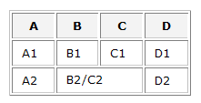
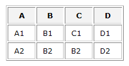

About colspan and rowspan
Colspans and rowspans in data source HTML tables are highly discouraged.
Colspans and rowspans merge table cells together, and when this happens, the number of rows and columns is thrown off balance.
For example, if you have the following HTML table:

When Spry creates the data set, the values B2 and C2 do not correspond individually to columns of their own. Spry thus reads the data in the table and creates the data set as follows:

Spry reads values from the leftmost (or topmost) column, which is why, in the preceding example, it places B2 in the data set as opposed to C2.
The first row of data (the column names for the data set) cannot use colspans.